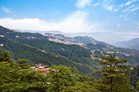

Welcome to the Land of the Gods
Himachal Pradesh "Province of the Snowladen Mountains" is a state in the northern part of India.
Situated in the Western Himalayas, it is one of the eleven mountain states and is characterized by an extreme landscape featuring several peaks and extensive river systems.
Himachal Pradesh is the northernmost state of India and shares borders with the union territories of Jammu and Kashmir,Ladakh,Punjab,Haryana,Uttarakhand and a very narrow border with Uttar Pradesh
The state also shares an international border to the east with the Tibet Autonomous Region in China. Himachal Pradesh is also known as 'Dev Bhoomi' or 'Land of Gods and Goddess' and 'Veer Bhoomi' which means 'Land of Braves'.
Birth of Himachal : History
The foothills of the modern state of Himachal Pradesh were inhabited by people from the Indus valley civilisation which flourished between 2250 and 1750 BCE
The Kols and Mundas are believed to be the original inhabitants to the hills of present-day Himachal Pradesh followed by the Bhotas and Kiratas.
During the Vedic period, several small republics known as Janapada existed which were later conquered by the Gupta Empire
Unique Culture
Himachal Pradesh was one of the few states that had remained largely untouched by external customs, largely due to its difficult terrain
With remarkable economic and social advancements, the state has changed rapidly.
Himachal Pradesh is a multilingual state like other Indian states
Western Pahari languages also known as Himachali languages are widely spoken in the state. Some of the most commonly spoken individual languages are Kangri, Mandeali, Kulvi, Chambeali, Bharmauri and Kinnauri.
Transport
Air:
Himachal has three Domestic Airports in Kangra, Kullu and Shimla districts.
Railways:
The only broad-gauge railway line in the whole state connects Amb Andaura–Una Himachal railway station to Nangal Dam in Punjab and runs all the way to Daulatpur, Himachal Pradesh.
Roads:
Roads are the major mode of transport in the hilly terrains. The state has road network of 28,208 kilometres (17,528 mi)